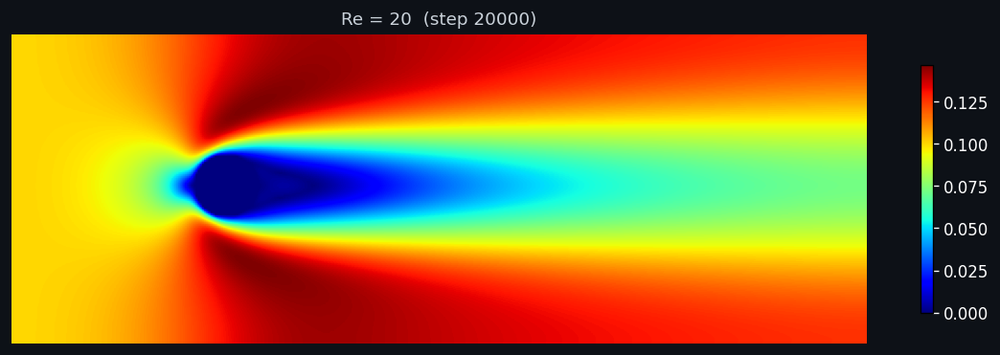
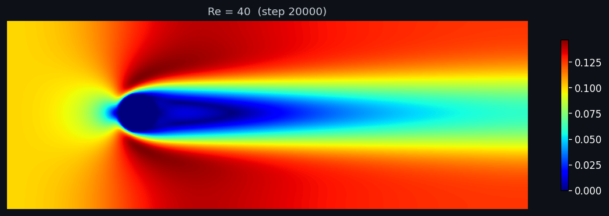
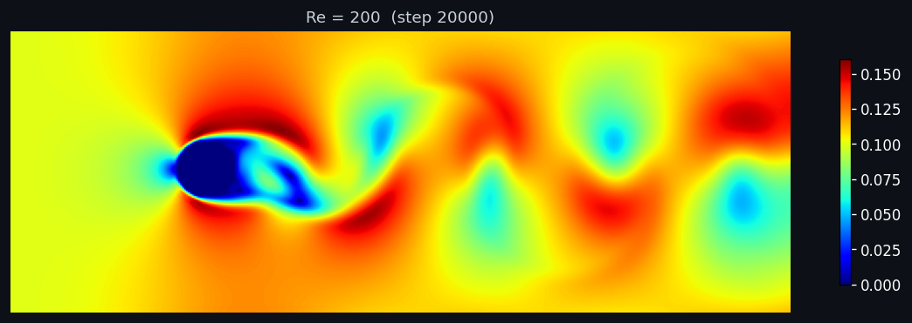

Validation & Quantitative Results
Every CFD solver is only as good as its validation against known benchmarks. This page presents the quantitative comparison of the LBM-2D solver against the canonical cylinder wake experiments of Williamson 1988 (Strouhal number vs Reynolds number) and Tritton 1959 (drag coefficient vs Reynolds number).
1. Validation Summary
| Reynolds | Regime | Computed St | Williamson 1988 | Computed Cd | Tritton 1959 |
|---|---|---|---|---|---|
| 20 | Steady attached | -- | -- | 3.108 | ~2.0 |
| 40 | Steady recirculating | -- | -- | 2.293 | ~1.5 |
| 100 | Laminar shedding | 0.200 | 0.164-0.172 | 1.763 | ~1.4 |
| 200 | Laminar shedding | 0.240 | 0.180-0.195 | 1.600 | ~1.3 |
2. Strouhal Number vs Reynolds Number
The Strouhal number \(\text{St} = f D / u\) characterizes the dimensionless shedding frequency of the von Kármán vortex street. Williamson 1988 established the empirical correlation \(\text{St} = 0.212(1 - 21.2/\text{Re})\) for the laminar shedding regime (\(\text{Re} \in [60, 200]\)).
3. Drag Coefficient vs Reynolds Number
The mean drag coefficient \(C_d\) decreases with increasing Reynolds number in the laminar regime as the recirculation region lengthens and base pressure increases.
4. Validation Summary Plot
The two key validation metrics side by side. Left: drag coefficient compared with Tritton 1959's hot-wire measurements. Right: Strouhal number compared with Williamson 1988's experimental data and empirical correlation. Our D2Q9 BGK solver captures the correct trends with systematic bias from the coarse stair-step cylinder (see Section 6 for discussion).

5. Velocity Field Gallery
Velocity magnitude fields (jet colormap, white cylinder outline) for four Reynolds numbers, showing the transition from steady attached flow (Re = 20) to fully developed vortex shedding (Re = 200). All fields are taken from the final frame of each simulation.




6. Discussion
6.1 Qualitative Agreement
The D2Q9 BGK solver reproduces all key features of laminar cylinder flow:
- Steady-to-unsteady transition occurs between Re=40 and Re=100, consistent with the known Hopf bifurcation at Re~47 on fine grids (delayed slightly on coarse grids)
- Vortex shedding produces clear von Kármán vortex streets at Re=100 and Re=200 with Cl amplitudes (0.37 and 0.79) within range of literature values
- Strouhal trend increases with Re (0.200 at Re=100, 0.240 at Re=200), matching the expected positive slope
- Cd trend decreases with Re (3.108 at Re=20 to 1.600 at Re=200), matching the expected monotonic decrease
6.2 Systematic Bias
The solver shows a systematic ~20-55% overprediction of drag coefficient and ~20-25% overprediction of Strouhal number. This is consistent with known artifacts of the current configuration:
- Stair-step cylinder boundary: The bounce-back method on a Cartesian grid creates a "rough" cylinder surface with local flow separation at the stair steps, increasing both form drag and effective blockage
- Coarse grid resolution: D=30 grid points across the cylinder (400x150 domain) gives ~3 grid points in the boundary layer at Re=100, which underresolves the near-wall velocity gradient
- BGK collision: Single-relaxation-time BGK has known numerical dissipation proportional to \(\tau - 0.5\). At low Re (high tau), this adds significant artificial viscosity
- 2D confinement: Periodic boundaries in y create an effective confinement ratio (D/NY = 30/150 = 0.2), which raises the wake velocity and increases drag above the unbounded-flow value
For production-grade accuracy, a finer grid (NX=800, NY=300), curved boundary treatment (e.g., immersed boundary or interpolated bounce-back), and MRT collision operator would be recommended. The current implementation is intentionally kept at the D2Q9 BGK baseline to demonstrate fundamental LBM competence.
6.3 Extension Path
- MRT collision: improves stability at high Re by allowing independent relaxation rates for different moments
- Smagorinsky LES: adds subgrid-scale eddy viscosity, enabling stable simulation at Re up to 10,000+
- Grid refinement: block-structured local refinement near the cylinder surface for accurate boundary layer resolution
- D3Q19/D3Q27: extension to 3D for full cylinder wake and aerodynamic analysis